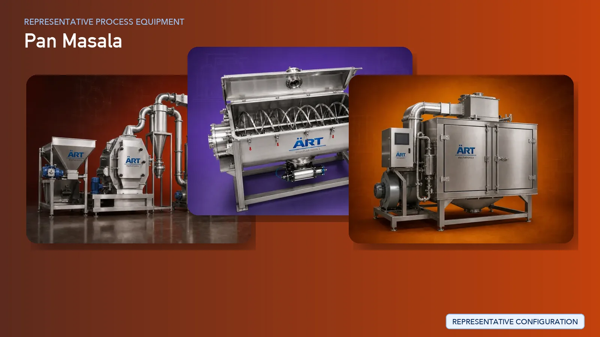

Pan Masala Manufacturing Plant & Machinery Solutions
Pan masala manufacturing is a highly specialized process that requires precision in ingredient handling, uniform mixing, controlled flavoring, and high-speed packaging. Consistency in taste, texture, and hygiene is critical to maintain product quality and brand value.

About Pan Masala processing
ART Mechatronics offers complete turnkey solutions for pan masala manufacturing plants, covering everything from raw material processing to final packaging. Our systems are designed for high-speed production, dust-free operation, and uniform product quality, making them ideal for large-scale commercial manufacturing.
Complete Pan Masala Process Flow
Raw materials such as supari, catechu, flavoring agents, and other ingredients are received, stored, and fed into the processing line.
Ensures smooth and controlled material flow.
Betelnut is processed through cleaning, cutting, grading, and roasting to achieve the desired size, texture, and moisture level.
Other ingredients such as catechu, flavor powders, and additives are processed and prepared for mixing.
Ensures fine and uniform ingredient consistency.
All ingredients are blended in precise ratios to achieve consistent taste, aroma, and texture.
Critical stage for product uniformity and quality.
Liquid flavors, perfumes, and additives are evenly applied to the mixture.
Ensures uniform coating and enhanced product appeal.
The blended product is conditioned or lightly dried to stabilize moisture and improve shelf life.
Pan masala production generates fine dust, especially during mixing and packaging. Systems Used:
Ensures:
- Clean working environment
- Product recovery
- Compliance with safety standards
Final product is packed into pouches at high speed using automated systems.
Capable of packing 2000–2500 pouches per minute
Packed pouches are grouped and packed into mono cartons.
Machinery Required for Pan Masala Plant
- Supari Processing Line
- Pulverizers / Grinders
- Ribbon Blender / Paddle Mixer
- Coating Drum
- Drying Systems
- Dust Collection System
- High-Speed Packing Machines
- Conveyors & Material Handling Systems
Turnkey Pan Masala Plant Solutions
ART Mechatronics provides complete end-to-end turnkey solutions for pan masala plants, including:
- Process design & plant layout
- Machinery manufacturing & integration
- Dust control & air handling systems
- Automation & control panels
- Installation & commissioning
- After-sales support
We design plants based on:
- Production capacity
- Product type (premium / regular / flavored)
- Packaging speed requirements
- Space and layout constraints
Why Choose Art Mechatronics
- Extensive experience in pan masala machinery manufacturing
- Expertise in high-speed packaging integration
- Advanced dust collection solutions
- Custom-built machinery for consistent product quality
- Global export capability
- Reliable after-sales service
Machinery in a Pan Masala plant
Where it's used
Get pricing & specs for the Pan Masala plant
Share the product, target capacity, current process and plant location. These details help our engineers discuss the right machine or line configuration.
One partner, from design to start-up
ART Mechatronics designs, manufactures, installs and commissions your Pan Masala solution with regional presence in India, UAE and Thailand.